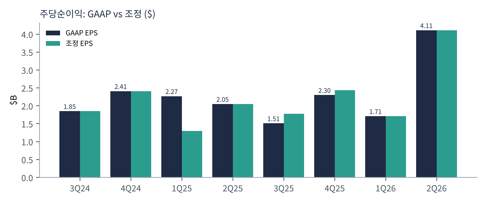
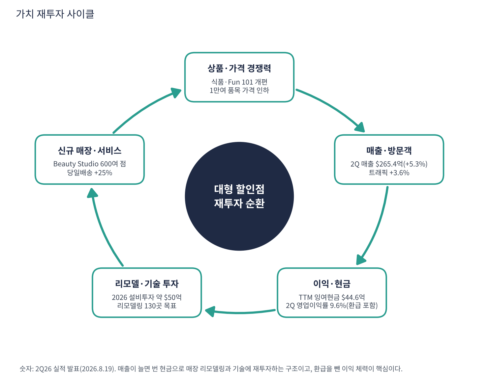

타깃은 미국 2,019개 매장과 디지털로 식품·생활용품·의류·홈·장난감을 파는 대형 할인점이다. 최근 두 분기 연속 비교매출이 플러스로 돌아섰지만, 2분기 EPS에 관세 환급 $1.65가 들어 있고 의류·홈은 정체다. 주가는 $161.45다.
| 항목 | 내용 |
|---|---|
| 종목 | Target (TGT) · NYSE · 소비재(유통) · 미네소타 미니애폴리스 |
| 멀티플 | PER 16.8배 · PEG 1.35 · P/S 0.68배 (11/13 종가 $161.45) |
| 최근 분기(2Q26) | 매출 $265.4억(+5.3%), 비교매출 +3.8%, GAAP EPS $4.11(환급 $1.65 포함) |
| 가이던스(2026) | 매출 약 +5%, EPS $9.90~10.90(환급 포함), 영업이익률 약 6%(환급 약 90bp 포함) |
| 현금·부채 | 스캐너: 현금 $54.1억, 총차입금 $190.9억, TTM 잉여현금 $44.6억 |
| 직책 | 인물 | 역할·특징 |
|---|---|---|
| CEO | 마이클 피델케(Michael Fiddelke) | 2026.2 취임. 2Q까지 두 분기 연속 비교매출 플러스를 성과로 제시 |
| CFO | 짐 리(Jim Lee) | 가격 인하 지속과 환급 활용 방향을 설명(1만여 품목 인하, '앞으로 더 있다') |
| 크리에이티브 디렉터 | 아이작 미즈라히(Isaac Mizrahi) | 2026 여름 합류, 자체 브랜드 디자인 자문 |
경영 스타일: '핵심 7개 영역에 투자를 집중해 매장 경험과 상품을 바꾼다'. 뷰티·헬스·식품·유아·여성복·홈·장난감 등 7개 우선 영역이 매출의 약 50%이고, 식품 매대 약 절반과 Fun 101 구역을 개편했다. 연초 $60억 규모 성장 계획을 발표했다.
매출의 95% 이상을 매장이 처리하고 당일배송이 25% 이상 늘었다(회사 발표).
뷰티 스튜디오 600여 점, 리모델링 100곳 이상 진행(목표 130곳), AI 기반 추천을 확대한다.
다음 실적발표(3Q26)는 세 가지 질문에 답하는 자리다.
질문 1. 3Q에도 비교매출과 방문객이 플러스를 유지하는가?
| 확인할 숫자 | 좋아지면 | 나빠지면 |
|---|---|---|
| 2Q 비교매출 +3.8%(방문객 +3.6%, 디지털 +8.7%), 전년 3Q 비교매출 -2.7%(낮은 기저), 컨센서스 매출 약 $264.8억·EPS 약 $2.0(시장 추정) | 플러스면 ②매출 고리가 이어진다 | 마이너스로 돌아가면 2Q 반등이 일시적이라는 뜻이다 |
질문 2. 의류·홈이 정체에서 벗어나는가?
| 확인할 숫자 | 좋아지면 | 나빠지면 |
|---|---|---|
| 2Q 의류 $40.9억·홈 $36.7억으로 전년과 거의 같음, 식품 $59.9억·Fun 101 $38.9억은 증가 | 두 부문이 성장하면 ①상품 고리가 넓어진다 | 정체가 이어지면 성장이 식품·장난감 등에 몰린다 |
질문 3. 연간 가이던스와 연말 시즌 전망이 유지되는가?
| 확인할 숫자 | 좋아지면 | 나빠지면 |
|---|---|---|
| 연간 매출 약 +5%, EPS $9.90~10.90(환급 $1.65 포함), 2026 설비투자 약 $50억, 상반기 EPS $5.82라 하반기 암시값은 $4.08~5.08(내 계산) | 유지·상향이면 ③현금과 ④투자 고리가 안정된다 | 하향이면 환급 효과를 빼면 이익 체력이 약하다는 신호다 |
한 줄 판정 규칙: 첫 질문에서 비교매출이 플러스이고 가이던스가 유지되면 약한 고리(의류·홈 정체, 환급 의존)가 완화되고, 방문객이 줄면 ②고리가 약해진다.
일정: 2026-11-18 예정(트레이딩뷰 일정, 컨퍼런스콜 오전 8시 ET, 회사 확정 확인 필요). 이번 발표에서 연말 시즌 전망이 함께 나온다.
| 분기 | 매출 | 순이익 | EPS | 조정 EPS | 특이 사항 |
|---|---|---|---|---|---|
| 3Q24 | $256.7억 | $8.5억 | 1.85 | 1.85 | |
| 4Q24 | $309.1억 | $11.0억 | 2.41 | 2.41 | |
| 1Q25 | $238.5억 | $10.4억 | 2.27 | 1.30 | |
| 2Q25 | $252.1억 | $9.3억 | 2.05 | 2.05 | |
| 3Q25 | $252.7억 | $6.9억 | 1.51 | 1.78 | |
| 4Q25 | $304.5억 | $10.5억 | 2.30 | 2.44 | |
| 1Q26 | $254.4억 | $7.8억 | 1.71 | 1.71 | |
| 2Q26 | $265.4억 | $18.8억 | 4.11 | 4.11 | 2Q26 EPS에 관세 환급 $1.65 포함 |


값은 트레이딩뷰 스캐너 분기 이력이다(회계연도 기준 분기, 2Q26 = 2026.8.1 종료). 조정 EPS는 트레이딩뷰 실적 페이지의 Reported 값이다. 2Q26 GAAP EPS $4.11에는 관세 환급 순이익 $7.52억($1.65)이 들어 있다(회사 발표). 분기 설비투자는 구하지 못했다.
흐름 요약: 매출은 3Q24 $256.7억에서 2Q26 $265.4억으로 늘었고 4분기(연말 시즌)가 가장 크다. 2Q26 EPS $4.11은 환급을 빼면 약 $2.46(내 계산)이며 전년 $2.05 대비 +20%다.
| 항목 | 값 | 비고 |
|---|---|---|
| 2Q 식품·음료 | $59.9억 | 전년 $55.9억(+7%), 고성장 영역 |
| 2Q 하드라인(Fun 101) | $38.9억 | 전년 $35.2억(+10.5%), 장난감·전자제품·게임 |
| 2Q 의류 | $40.9억 | 전년과 같은 수준(정체) |
| 2Q 홈 가구·장식 | $36.7억 | 전년 $36.6억(정체) |
| 2Q 비상품 매출 | – | +20% 이상(Roundel 광고·마켓플레이스·구독) |
성장은 식품·Fun 101에서 나오고 의류·홈은 정체다. 뷰티·식품은 한 자릿수 후반 성장이며 뷰티 구역은 올리타(Ulta) 제휴 종료로 자체 Beauty Studio로 바뀐다. 6개 상품군 전체 표는 이번에 구하지 못했다.
타깃은 '독창적이고 가치 있는 상품과 매장·디지털 경험으로 방문객을 되찾아 새로운 성장 국면을 여는 것'을 목표로 한다.
| 축 | 최근 움직임 |
|---|---|
| 상품 | 7개 우선 영역(뷰티·헬스·식품 등)이 매출의 약 50%, 식품·Fun 101 개편 완료 |
| 매장 | 리모델링 130곳 목표, 2026 신규 매장 24곳(누적), 설비투자 약 $50억 |
| 재무 | 연간 매출 +5%, EPS $9.90~10.90(환급 포함), 영업이익률 약 6% |

| 이동평균 | 값 | 종가 대비 | 해석 |
|---|---|---|---|
| 5일선 | $162.55 | -0.7% | 현재가가 아래 |
| 20일선 | $156.36 | +3.3% | 현재가가 위 |
| 50일선 | $156.37 | +3.2% | 현재가가 위 |
| 100일선 | $151.45 | +6.6% | 현재가가 위 |
| 200일선 | $136.72 | +18.1% | 현재가가 위 (+18%) |
주봉 흐름: 52주 고점 $170.75(8/24), 52주 저점 $83.44(11/20). 현재가 $161.45는 200일선 $136.72보다 위, 50일선 $156.37보다 위에 있다.
| 규칙 | 기준 | 현재 값 | 신호 |
|---|---|---|---|
| 장기 추세 필터 | 종가 vs 200일선 | $161.45 > $136.72 | 매수 |
| 중장기 교차 | 50일선 vs 200일선 | $156.37 > $136.72 | 매수 |
| 단기 교차 | 20일선 vs 50일선 | $156.36 < $156.37 | 매도 |
| 돈키언 채널 | 55일 고가 $167.60 / 저가 $145.32 | 중간값 $156.46 위 | 매수 |
| 1개월 모멘텀 | 21거래일 수익률 | +3.1% (기준 $156.63) | 매수 |
| 3개월 모멘텀 | 63거래일 수익률 | +6.9% (기준 $151.01) | 매수 |
| 6개월 모멘텀 | 126거래일 수익률 | +32.8% (기준 $121.54) | 매수 |
| 12개월 모멘텀 | 252거래일 수익률 | +75.7% (기준 $91.91) | 매수 |
| 종합 (8개 평균) | +0.75 | 강한 매수 |
해석: 8개 신호 중 매수 7개, 매도 1개(점수 +0.75, 강한 매수)다. 14일 ATR $5.47 (3.4%).
| 가격·조건 | 무엇이 바뀌나 | 의미 |
|---|---|---|
| 20일선이 50일선 위로 | 20/50 교차 | 매도 → 매수 |
| $136.72 돌파 | 200일선 | 이탈하면 매수 → 매도 |
| 50일선이 200일선 위로 | 50/200 교차 | 이탈하면 매수 → 매도 |
| $156.46 돌파 | 돈키언 중간값 | 이탈하면 매수 → 매도 |
| 구분 | 가격대 | 근거 |
|---|---|---|
| 저항 1 | $162.55 | 5일선 |
| 저항 2 | $167.60 | 55일 고점 |
| 지지 1 | $156.37 | 50일선 |
| 지지 2 | $156.36 | 20일선 |
점수는 +0.75(강한 매수)다. 14일 ATR은 $5.47로 현재가의 3.4%다. 가까운 저항 $162.55을 종가로 넘는지와 가까운 지지 $156.37를 지키는지가 신호 전환의 기준이다. (내 가정, 매매 권유 아님)
| 악재 요인 | 내용 | 강도 |
|---|---|---|
| 일회성 환급 의존 | 2Q EPS $4.11 중 $1.65가 관세 환급, 영업이익률 약 90bp 포함 | 높음 |
| 의류·홈 정체 | 2Q 의류·홈 매출이 전년과 같은 수준 | 중간 |
| 경쟁 | 월마트·코스트코와 비교매출·가격 경쟁, 올리타 제휴 종료 | 중간 |
| 투자 부담 | 2Q 설비투자 +27%, 가격 인하 지속 | 중간 |
| 소비 둔화 | 7월 미국 소매판매 약세(상무부), 비교매출 기저 효과 | 중간 |
| 티커 | 회사 | PER(TTM) | PEG | P/S | EPS 성장(YoY) |
|---|---|---|---|---|---|
| TGT | 타깃 | 16.8배 | 1.35 | 0.68배 | +12% |
| WMT | 월마트 | 46.4배 | 11.07 | 1.37배 | +4% |
| COST | 코스트코 | 53.3배 | 3.76 | 1.60배 | +14% |
| DG | 달러제너럴 | 17.4배 | 0.41 | 0.68배 | +42% |
| DLTR | 달러트리 | 16.9배 | – | 1.34배 | – |
| BJ | BJ's 홀세일 | 24.1배 | 4.75 | 0.62배 | +5% |
TGT 첫 행은 스캐너 값이다. TGT의 PEG와 EPS 성장은 관세 환급이 포함된 값이다. WMT의 PEG 11.07은 EPS 성장 +4%에서 나온 값이다.
타깃은 현금 $54.1억, 총차입금 $190.9억이고 TTM 잉여현금이 $44.6억이다. 2Q 설비투자는 $14억(+27%)으로 늘었고 배당 $5.18억을 냈으며 자사주 매입은 없었다(잔여 한도 $83억).
| 지표 | 값 | 계산·출처 | 해석 |
|---|---|---|---|
| 현금 | $54.1억 | 스캐너 | 환급 현금 유입은 3Q 이후 반영될 수 있음(확인 필요) |
| 총차입금 | $190.9억 | 스캐너 | 순차입 약 $136.8억(내 계산) |
| TTM 잉여현금흐름 | $44.6억 | 스캐너 | TTM 매출 $1,077.1억 대비 약 4.1%(내 계산) |
| TTM 설비투자 | $42.7억 | 스캐너 | 2026 계획 약 $50억(회사) |
| 기준 | 값 | 비고 |
|---|---|---|
| P/S (TTM) | 0.68배 | 스캐너 |
| 동종 | WMT 1.37, COST 1.60, DG 0.68, DLTR 1.34, BJ 0.62 | 11/13 스캐너 |
해석: P/S 0.68배는 월마트·코스트코보다 낮고 달러제너럴과 같은 수준이다. 영업이익률(TTM 5.7%)이 낮아 매출 대비 가격이 낮게 형성된 것으로 보인다(내 해석).
| 지표 | 값 | 판정 |
|---|---|---|
| PER (GAAP TTM) | 16.8배 | 스캐너, TTM EPS $9.64 |
| PER (환급 제외, 내 계산) | 약 20.2배 | $161.45 ÷ ($9.64 - $1.65) = 약 $7.99 |
| TTM EBITDA | $93.5억 | 스캐너, 매출 대비 약 8.7%(내 계산) |
| TTM 영업이익률 | 5.7% | 스캐너(환급 포함) |
| 방식 | PER | EPS 성장률 | PEG | 판정 |
|---|---|---|---|---|
| 트레이딩뷰 (GAAP TTM) | 16.8배 | +12.3% | 1.35 | 환급 $1.65가 TTM EPS에 포함 |
| 환급 제외 (내 계산) | 약 20.2배 | 약 -7% | 산출 불가 | 환급 제외 TTM EPS $7.99는 전년 약 $8.58보다 낮음 |
판정: 트레이딩뷰 PEG 1.35는 1.0을 넘고, 환급을 빼면 EPS가 줄어 PEG를 산출할 수 없다.환급은 일회성이라 이를 빼면 이익 성장이 보이지 않는다. 회사는 하반기 환급이 더 있어도 가이던스에는 넣지 않았다(내 해석).

타깃의 사이클은 상품·가격 경쟁력 → 매출·방문객 → 이익·현금 → 리모델·기술 투자 → 신규 매장·서비스이다. 번 현금으로 매장과 상품을 바꿔 방문객을 늘린다.
| 고리 | 현재 숫자 | 고리 강도 | 약해지는 신호 |
|---|---|---|---|
| ① 상품·가격 경쟁력 | 식품·Fun 101 두 자릿수 성장, 1만여 품목 인하 | 보통 | 의류·홈 정체 |
| ② 매출·방문객 | 2Q 매출 +5.3%, 방문객 +3.6% | 강함 | 전년 기저가 낮음(2025 비교매출 -3.8%) |
| ③ 이익·현금 | TTM 잉여현금 $44.6억, 영업이익률 9.6%(환급 포함) | 보통 | 환급 제외 약 5.9%(내 계산) |
| ④ 리모델·기술 투자 | 설비투자 2Q $14억(+27%), 약 $50억 계획 | 보통 | 투자가 늘며 잉여현금 부담 |
| ⑤ 신규 매장·서비스 | Beauty Studio 600여 점, 당일배송 +25% | 보통 | 올리타 제휴 종료 전환 위험 |
구조: 가장 약한 곳은 ③이다. 2Q 영업이익률 9.6% 중 약 3.7%p가 환급 효과라 환급을 빼면 약 5.9%(내 계산)이고, 3Q 이후 환급 없이 이익률이 유지되는지 확인돼야 사이클이 닫힌다.